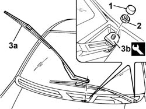

5050B34 windscreen wiper arm/s complete with blade - r+r
- Path
- Procedures > 50 AUXILIARY UNITS > 5050 SCREEN WASHERS AND HEADLAMP WASH/WIPE > 5050B windscreen wash/wipe > 5050B34 windscreen wiper arm/s complete with blade - r+r
- Kind
- repair procedure (removal / refitting; the operation number is the code)
- Applies to
- all engines; all production periods
- Interactive page
- https://sloeber94.github.io/elrnDB-fPnd/en/#/2752916
Applies to: all engines; all production periods
 Removing
Removing
 Refitting
Refitting1. Remove the cap.
2. Unscrew the retaining nut.
3. Remove the window wiper arm complete with blade (3a) using the tool (3b).
 | Name | Country |
|---|---|---|
3b | Extractor | 1.870.717.000 |

Applies to: all engines; all production periods
Refitting
RemovingFit the window wiper arm complete with blade and check that it is correctly aligned.
Tighten the fixing nut to the specified torque.
 | Fastening | Component | Ø | Value (daNm) |
|---|---|---|---|---|
- | Nut | WINDSCREEN WIPER ARM/S | M8 | 1.6 |
Fit the cap.
Topics that link to this page (7)
- 5050B38 windscreen wiper assembly - r+r or repair
- 5050B42 windscreen wiper motor - r+r
- 5505C26 bonnet wiring - r r
- 7025A10 bonnet lid - square
- 7025A18 l/h or r/h bonnet lid hinge (one) - r+r with lid removed
- 7035A18 windscreen glass r r including cleaning of housing
- 7210E22 R.R. WINDSCREEN BASE TRIM